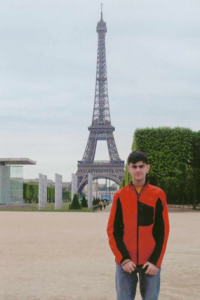
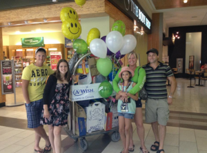
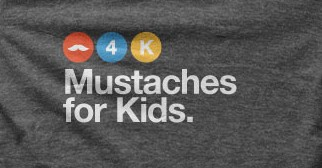
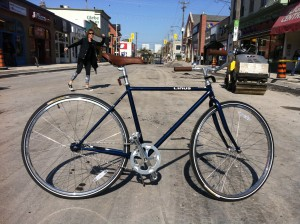
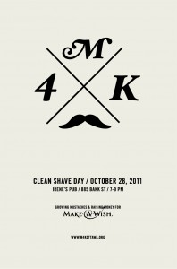

Donate Now
Growers, your mustaches grant wishes. Here is how your efforts have helped over the last year:
Nathan’s Wish To go to Paris & See the Eiffel Tower
Nathan is a nice & kind 13 old teenager who was diagnosed with a brain tumor. Nathan likes to play hockey and baseball. He also enjoy reading and playing video games.
His most cherished wish was to go to Paris, eat french food and see the Eiffel Tower. With the help of the fundraising efforts of the “Mustaches 4 Kids” (M4K) event & Make-A-Wish® Eastern Ontario, Nathan and his family were able to enjoy a family trip to London & Paris for a week. While in London, they met up with family and went on the London Eye. Nathan stated the view of Big Ben was amazing from there. They followed with a visit to the London Aquarium where Nathan had the chance to pet a starfish. Nathan got to see the “Queen” at the Trooping of the Color, went to Windsor Castle, Le Louvre and the Palace of Versailles, just to name a few.
The most thrilling for Nathan was when he made it up the Eiffel Tower! He stated: “ I thought I would have to walk up the Eiffel Tower but a large elevator was available. The view from the top was spectacular!”Nathan andhis family really enjoyed their trip to London and Paris. They are very grateful to the Make-A-Wish Foundation. Nathan stated that he is very thankful for making this experience possible and making his wish come true. It was amazing!
Corissa’s Wish To go on a Shopping Spree

Corissa is a beautiful 10 year old little girl. She loves shopping for clothes and doing crafts. Hide and seek is her favorite game. She loves the group “One Direction” and she is passionate about the color lime green.
Her most cherished wish was to go shopping for things that she had lost in a house fire. With the help of the fundraising efforts of the “Mustaches 4 Kids” (M4K) event & Make-A-Wish ® Eastern Ontario, Corissa’s dream came true and she was treated to a spectacular day of shopping. Her magical day started when the wish grantors arrived at Corissa’s house with lots of goodies. Included was a beautiful Sony Digital Camera with lens kit, generously donated by Sony Canada, an Ipod, a new bed and a craft table. Next Corissa and her family hopped into a stretch Limousine. Her trip started with a stop at Lululemon, then a brief lunch at her favorite restaurant, McDonalds, on the way to Bayshore Shopping Centre where she shopped at all her favorite stores. Staffs at each store were waiting for Corissa’s arrival and went above and beyond to make her feel extra special. She received gifts from all the stores, baskets of goodies, gift cards, outfits; balloons just to name a few.
 There was an awesome moment in the afternoon when Corissa serendipitously ran into 6 year old Isabelle who had donated her birthday money to go towards a wish! For the wish grantors the highlight of the day was when the staff at the “Build a Bear” store put on a show with the entire staff to help Corissa build her new bear. When asked what she would wish for; her answer was “I have nothing else to wish for”. The family is very grateful to everyone for their generosity and for helping Corissa’s wish come true.
There was an awesome moment in the afternoon when Corissa serendipitously ran into 6 year old Isabelle who had donated her birthday money to go towards a wish! For the wish grantors the highlight of the day was when the staff at the “Build a Bear” store put on a show with the entire staff to help Corissa build her new bear. When asked what she would wish for; her answer was “I have nothing else to wish for”. The family is very grateful to everyone for their generosity and for helping Corissa’s wish come true.
November 22nd, 2012 by admin
Your magical mustache will make wishes come true.
Its true. Amazingly true. This year, and since 2005, men in Ottawa foster fantastic follicular growth on their upper lip and raise money for Make a Wish of Eastern Ontario. Over the years these fine young men have raised over $125,000 and have granted many wishes.
This is your call to do more with your upper lip.
We’re going to have amazing prizes to reward you for your efforts in contributing to the magic that will unfold this fall in Ottawa.
Say yes to the stache and commit your lip to awesomeness.

October 15th, 2012 by admin
We got new prizes for the top fundraisers. On top of the WestJet tix to anywhere in NA, a bike from Joe Mamma’s, boatloads of Sens tickets. We just got in a year subscription to Zip.ca valued at $360 (c/o grower Alex Hosselet), and a
A Deckster and an iPod Nano from grower Dom Coballe at n-Product
The deckster: Made to measure aircraft-grade aluminum jacket coated in matte Classic Silver paired with vegetable tanned Night Black genuine leather bands, finished with silver stainless steel hardware.
The iPod Nano: you what this is.
If you don’t know how they go together:
Deckster.ca Promo Spot from N-Product on Vimeo.
December 1st, 2011 by admin
In this final week I ask you to persuade, plea, pry, and pester for pledges. Every little bit helps. The efforts in this last week will probably mean giving another child a life-changing wish. This is the week that actually makes me feel all warm and fuzzy inside. I hope you feel it too.
See you Friday.
Stache Bash
Two words: dress to impress. And be prepared for a good time.
We will be Stacheing it up at the Legion on Kent near Sommerset on Friday, December 2. Plan to be there at 7:30pm. The festivities will start promptly at 8pm. More information can be found on the site.
Prizes
We have prizes for the top fundraisers:
1. Airfare for 2 anywhere in North America from Westjet.
2. A bike from Joe Mamma’s. Thanks Jose.
3. A bunch of sets of Sens tickets (200 level plus parking).
Of course there is also the Kevin Janok Award for worst stache. Typically it goes to Kevin Janok but last year he was dethroned. Even though most mustaches are pretty terrific this year, theres always a worst.
Pledging and Dropping off money
This isn’t all that complicated, here is everything you need to know:
- Bring all your money and pledge sheets with you on Friday. Write your name on the pledge sheet. Have it totaled prior to arrival.
- Please write a cheque for the cash portion of your pledging. This is a nice-to-have and saves us a lot time and effort. Cheques should be made out to Make-a-Wish Eastern Ontario.
- Don’t include donations over paypal on your pledge sheet. At the venue, we will have the total amount pledged to you over paypal.
- For those who pledged to you over paypal, they will get a receipt, we have their information.
- If you can’t make it on Friday, you have a few options:
- drop off your money and pledge sheet to me during business hours at my place of work or on the weekend/evenings to my house – email me for the address and my mobile number
- send money to this email address from online banking.
- send the money through paypal on the site
- mail checks to me. email for the address.
November 28th, 2011 by Trevor Kealey

Jose from Joe Mamma, for the 2nd year in a row, has donated a bike to be given to one if the highest fundraisers. Apparently the crazy lady in the shot is not included.
For all you growers, we’re also giving away Two tickets from WestJet to anywhere in North America, and a whole bunch of Sens tickets.
November 2nd, 2011 by admin
Download this year's poster.
Its here! Clean Shave Day is now.
Some quick business for today:
0. If you havent registered, do it now: https://m4kottawa.org/join/
1. Shave.
2. Take your picture. Send it to info@m4kottawa.org
3. Meet us at Irene’s for a beer: Irene’s Pub at 885 Bank St. 7-9pm. We’ll be taking pictures.
October 28th, 2011 by admin
For all you stache-noobs, here is a quick run down on who and what we are:
- We grow mustaches and raise money for Make-a-Wish Foundation of Eastern Ontario
- We start on Oct 28th and your mustache stays on until Stache Bash on Dec 2.
- We are in our 7th year and have raised over $100,000 to date
- There will be over 100 guys growing Mustaches for Kids this year
- We have a lot of great prizes for fundraisers including airfare to anywhere in NA from WestJet, a bike from Joe Mamma’s and lots of Sens tickets
If and when we have tweaked your interest, register now.
Any other questions can be directed at info@m4kottawa.org.
October 26th, 2011 by admin
Your mustache is dormant but soon it will break free from its lippy tomb and spread awesomeness unto this great city of yours. That’s right – brothers, let’s grow some mustaches.
We’re working on some great prizes for our top fundraisers. So far we have:
- WestJet tickets for 2 to anywhere in North America
- A bunch of Sens tickets
If you think you have a lead on some stachely prizes that would help your brothers grow and raise a little more, we would love to hear from you.
A new program & More ways to win prizes
This year we will be kicking-off a professional development initiative called “the Mentorstache Program”. Bring on a rookie stacher and coach them on how to grow a great stache and raise money. Prizes will be awarded to the mentor to the rookie who raises the most money and to the mentor/rookie(s) group that raises the most. More information to come.
Go Forth and Spread the Word
October 5th, 2011 by admin
Alec’s Wish to go to Jamaica
Alec’s is a very sensitive 13 year old boy who is very close to his family. His physical hobbies are limited due to his medical condition, Brugada/Long QT Syndrome, a genetic disease that is characterised by abnormal electrocardiogram (ECG) findings and an increased risk of sudden cardiac death.
He said his wish to go to Jamaica would be a once-in-lifetime opportunty. With the help of the fundraising efforts of the “Mustaches 4 Kids” (M4K), the Make-A-Wish Foundation of Eastern Ontario made all the arrangements to have Alec & his family stay in a beautiful all-inclusive resort in Monego Bay. Alec was able to particpate in many activities
including parasailing and a tour to the infamous “Dunn’s River Falls”.
One of the items on his to-do list while in Jamaica and perhaps the most memorable day of Alec’s trip, was his tour of the village & homestead of “Bob Marley”, the place where this well known musician grew up and was buried.
Stephanie’s Wish to go to The Grammy’s
Stephanie is a typical 15 year old girl that is captivated by celebrities and their lives. Her wish was to go to “The Grammys”, an event that is considered the most prestigious annual event by most celebrities. She wanted to see first hand the many stars that walk the red carpet and attend the show. She only hoped she could actually meet one of the celebrities. Her dream came true in February when she was flown to Los Angeles with her family.
The day of “The Grammy’s” Stephanie was treated to a professional hair style and a spa treatment before she was picked up by a stretch Hummer limousine and escorted to the event. She was given fantastic seats to view all the celebrities that walked the “red carpet” before heading into the auditorium. She was also given great seats to attend the show and was invited to an after-party where again she was able to see many of the celebrities she had only seen in magazines or on TV.
Upon her return to reality, Stephanie states “Everything that happened was so much more than I could ever imagine. I still play the trip over and over in my head so I will always remember it.”
Danica’ Wish To go to The Atlantis Resort in the Bahamas
Danica is a positive, courageous and “strong willed” 14 year old girl from Ottawa who was diagnosed in March 2010 with a brain tumor. She had several surgeries which paralyzed her right side and because of her determination, she beat the odds and regained her strength and mobility.
With the help of the fundraising efforts of the “Mustaches 4 Kids” (M4K) event & the Make-A-Wish Foundation of Eastern Ontario, Danica and her family were whisked away to the “Atlantis Paradise Resort” in the Bahamas in April 2011 to spend a worry-free & fun week.
October 5th, 2011 by admin

Congratulations to Chris Tulk our new reigning Mustache King.
Stache Bash was a magical night filled with awesome mustaches and a gigantic cheque.
For the second year in a row, we raised over $30,000 for Make-a-wish Foundation of Eastern Ontario. That brings our all-time-6-year total to over $100,000.


More photos on flickr
Thank You!
Jose Bray at Joe Mamma Bikes for donating a bike. Staches gotta get around – and so do you. If you’re buying a bike this year, go check out his shop.
Steve St.Pierre for designing an awesome poster and t-shirt
Mike Coughlin and the good people at the Standard for putting us up this year and raising $1500.
Trevor “Stache Wrangler” Kealey (2007 Champ) for hosting the Stache Bash. I think I smell a legacy starting. Props also go out to Mike Hollingworth, Paul Townsend and Andrew Munch for evening preparation and logistics.
Mike Hollingworth and Trevor Kealey – co-organizers extraordinaire
Dennis Elliott at Make-a-Wish for pulling together kick-ass prizes and dedicating your time to a great cause. Its an absolute pleasure working with you and your team.
December 20th, 2010 by admin
 There was an awesome moment in the afternoon when Corissa serendipitously ran into 6 year old Isabelle who had donated her birthday money to go towards a wish! For the wish grantors the highlight of the day was when the staff at the “Build a Bear” store put on a show with the entire staff to help Corissa build her new bear. When asked what she would wish for; her answer was “I have nothing else to wish for”. The family is very grateful to everyone for their generosity and for helping Corissa’s wish come true.
There was an awesome moment in the afternoon when Corissa serendipitously ran into 6 year old Isabelle who had donated her birthday money to go towards a wish! For the wish grantors the highlight of the day was when the staff at the “Build a Bear” store put on a show with the entire staff to help Corissa build her new bear. When asked what she would wish for; her answer was “I have nothing else to wish for”. The family is very grateful to everyone for their generosity and for helping Corissa’s wish come true.


{kind=link}
{kind=link}
{kind=link}
{kind=link}
{kind=link}
{kind=link}